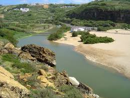
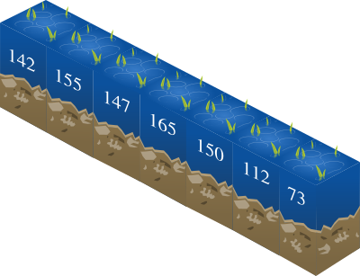
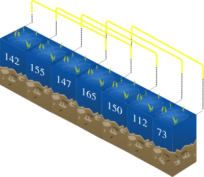
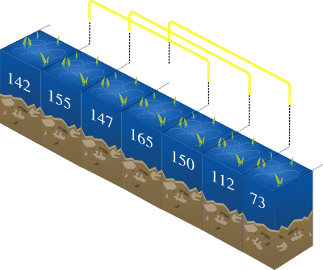

Para efeitos da nota atribuida à resolução de exercícios ao longo do semestre - Submeter até 23:59 de 3 de Dezembro
(o problema continuará depois disponível para submissão, mas sem contar para a nota)
[para perceber o contexto do problema deve ler o guião da aula #08]
Neste problema deverá submeter uma classe ED222 contendo um programa completo para resolver o problema (ou seja, com o método main).

O Ruivaco-do-Oeste (Achondrostoma occidentale) é um peixe de água doce que habita o nosso país, mas que se encontra em risco de extinção.Felizmente, existe no nosso país a Organização Naturalista de Investigação (ONI), criada especificamente para estudar e resolver questões como esta. De modo a tentar compreender melhor a situação atual, a ONI vai estudar uma secção do Rio do Sobral, uma das casas do Ruivaco-do-Oeste, onde vai poder observar melhor o comportamento desta espécie.
Considera-se o rio como uma sequência de N localizações. O estudo que pretendem fazer vai abranger uma região contínua do rio que contém exatamente K localizações consecutivas . Todavia, a escolha do local é uma tarefa delicadíssima! A ONI sabe que este peixe prefere partes mais profundas do rio, especificamente com uma profundidade mínima de T unidades de comprimento.
Para ajudar nessa escolha terão acesso a um estudo prévio sobre o rio. Esse estudo, tal como nós fizemos até agora, considera o rio como uma sequência de N localizações, referindo para cada uma delas a sua profundidade, em unidades de comprimento.
Consideremos um exemplo em que o rio consiste em N=7 localizações e em que o estudo abrange K=3 delas, onde 142 155 147 165 150 112 73 é a sequência das profundidades. A imagem seguinte representa esta situação.

Qualquer segmento de 3 localizações consecutivas é um potencial local para o estudo. Os possíveis segmentos estão indicados na imagem seguinte.

De modo ao estudo não ser demasiado dispendioso para a informação que conseguirá obter, decidiu-se que uma região é satisfatória se pelo menos metade das suas K localizações tiver uma profundidade maior ou igual a T.
Olhando para o estudo prévio, o presidente das ONI apercebeu-se de que pode haver mais do que uma maneira de escolher uma secção satisfatória com exatamente K localizações. Para o exemplo anterior, se a profundidade mínima for T=150 há 3 regiões de K elementos que seguem a propriedade mencionada. É possível realizar o estudo em qualquer uma das regiões descritas na imagem seguinte.

Mas o presidente antes de ser um ecologista era um cientista perseguidor de novo conhecimento, e não vai conseguir dormir descansado enquanto não souber exatamente de quantas maneiras consegue escolher uma secção satisfatória para o estudo. Será que podes ajudá-lo nesta tarefa para que ele possa voltar a dedicar-se a ajudar espécies indefesas?
Dados inteiros N, K, T e uma sequência de N inteiros, calcular o número de subsequências contíguas de comprimento K em que pelo menos metade dos elementos são maiores ou iguais a T.
Na primeira linha vêm três inteiros: N que representa o número de localizações do rio, K que representa o comprimento do segmento e T que representa a profundidade mínima, por esta ordem.
Segue-se uma linha com N inteiros separados por espaços, onde o i-ésimo representa a profundidade Ti da i-ésima localização.
Uma única linha com um inteiro que representa o número de regiões contíguas de comprimento K que é possível escolher onde pelo menos metade das localizações têm profundidade mínima T.
São garantidos os seguintes limites em todos os casos de teste que irão ser colocados ao programa:
| 1 ≤ K ≤ N ≤ 100 000 | Comprimento da região e Número de localizações | |
| 1 ≤ T ≤ 100 000 | Profundidade mínima | |
| 1 ≤ Ti ≤ 100 000 | Profundidade de cada localização |
Os casos de teste deste problema estão organizados em 2 grupos com restrições adicionais diferentes:
| Grupo | Número de Pontos | Restrições adicionais |
|---|---|---|
| 1 | 40 | 1 ≤ N ≤ 100 |
| 2 | 60 | - |
7 3 150 142 155 147 165 150 112 73
3
Este exemplo corresponde ao mencionado no enunciado.
12 4 10 5 10 12 10 9 14 5 7 9 11 3 3
4(adaptação para a UC de Estruturas de Dados - CC1007 - DCC/FCUP)
Conteúdo de Fernando Silva (DCC/FCUP), migrado de dcc.fc.up.pt/~fds/aulas/EDados/2526/praticas/problems/prob222.html.